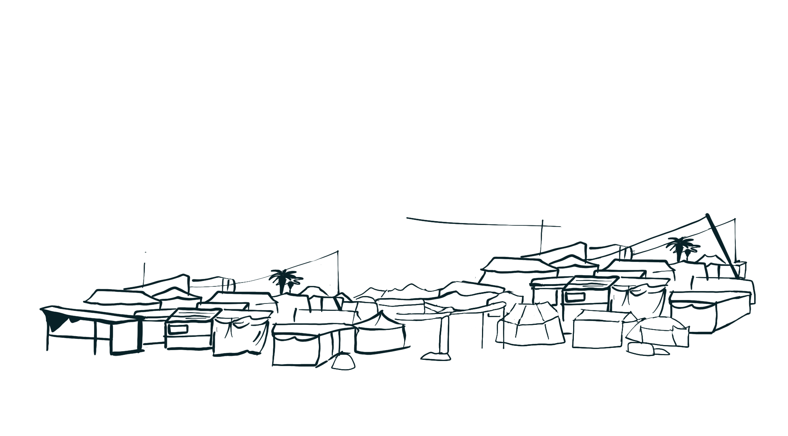
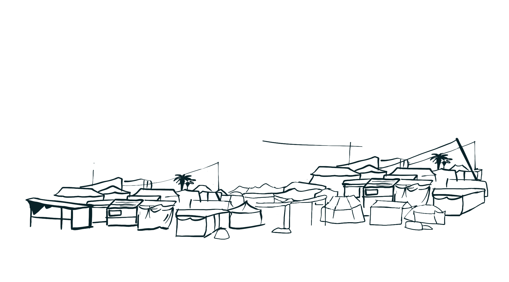

Two Years of War
Journalism first-hand recap

 


Two years on from Hamas’ October 7 attack and the start of Israel’s onslaught on Gaza, the vast majority of the enclave lies in ruins. Israel’s aerial bombardment, ground invasion, and hermetic blockade of the territory, which long predates the latest offensive, have decimated Gaza’s population, its infrastructure, and its social fabric, amounting to the crime of genocide.
As the Israel military continues to bomb the Strip in what it euphemistically describes as “enforcement” of the U.S.-brokered ceasefire, the official death toll has surpassed 68,000. Multiple recent studies suggest the true figure could be many tens of thousands higher. Hospitals — those that have not been destroyed beyond repair — are struggling to treat the wounded, the hungry, and the sick who survived amid severe shortages of everything from anesthesia to clean water.
Throughout all of this death and devastation, there has been one constant: the presence of Palestinian journalists on the ground reporting on every massacre, land grab, and war crime. With Israel barring the international media from entering Gaza, these journalists have served as the world’s window into the genocide. Over 250 have been killed, many of them directly targeted because of their work, making this the deadliest conflict for the press since the Committee to Protect Journalists began collecting data almost half a century ago.
For the past two years, +972 has worked closely with a team of freelance reporters inside Gaza who have covered all angles of Israel’s onslaught — from Beit Lahiya in the north to Rafah in the south. Together, they have illuminated what Israel worked hard to keep hidden, while enduring the same immense danger, starvation, repeated displacement, and loss of loved ones as the subjects of their reporting.
Through their writing — a selection of which we have excerpted below, and which can be read in full through the links provided — they have sought to piece together the fragments of life, loss, and resistance that have defined Gaza under Israel’s relentless bombardment. This is the genocide through their eyes.
Gaza shatters the facade of ‘calm’
8.10.2023Gaza City
More than 24 hours have passed since Hamas broke out of its Gaza cage, launching an unprecedented attack that caught the Israeli army completely off guard. The infiltration of Palestinian militants across the separation fence, as well as by air and sea — already described as Israel’s most significant intelligence and military failure since the Yom Kippur War of 1973 — has resulted in the deaths of over 700 Israeli citizens from shooting attacks and rocket fire, and the kidnapping of dozens who have been brought to Gaza.

For those of us watching from within the besieged Gaza Strip, the situation has been nothing less than terrifying…The death toll in Gaza has already surpassed 350, with thousands more wounded, and it appears inevitable that the worst is yet to come.
My drive through Gaza’s escape route
14.10.2023Gaza City
Like all Palestinians here, I had received Israel’s messages ordering us to evacuate the northern half of the strip within 24 hours… On Salah al-Din Road — the main highway that runs through the strip from north to south and connects all of its towns — thousands of families were making the same journey. Some were hurrying on foot, carrying whatever belongings they could, and others were riding on large trucks or in their cars.
 Mohammed Zaanoun/Activestills.org
Mohammed Zaanoun/Activestills.org
How do you bury 3,000 martyrs?
18.10.2023Gaza City
In Gaza’s hospitals, the morgue refrigerators are overflowing with the corpses of unidentified martyrs. These include those whose bodies have been dismembered as well as those who were displaced from their usual place of residence and their identities unknown. Some hospitals have been forced to use refrigerators from ice cream trucks to store more corpses, while others are simply placing bodies they don’t have space for in tents to keep them out of the sun.


Ceasefire reveals the toll of devastation
28.11.2023Khan Younis
After 47 days of continuous bombing and destruction, the news that Israel and Hamas had reached a temporary ceasefire agreement was met with cautious relief here in Khan Younis, in the southern Gaza Strip… But the relief also brings sorrow and anxiety, as people face up to the scale of the devastation caused by Israel’s bombardment — including the loss of loved ones and homes.
Rafah
Around half of the Gaza Strip’s population — an estimated 1 million people — is now crammed into the small southern city of Rafah, near the border with Egypt.
Like the rest of Gaza, Rafah does not have enough food, water, medicine, or shelter to accommodate its permanent residents, let alone the vast number of people now seeking refuge in the city.
Many families are sleeping in tents, if they can find one; if they can’t, they sleep on the streets.
Rafah in panic as Israeli invasion begins
08.05.2024Ruwaida Amer & Mahmoud Mushtaha
Rafah
Israeli forces moved into Gaza’s southernmost city, which has become a shelter for 1.5 million Palestinians with nowhere else to go. This is the moment they most feared, carrying the potential for a catastrophe greater than anything we’ve seen so far.
Within hours, tens of thousands packed up what remains of their lives — many of them for the third, fourth, or fifth time since October — and headed northwest to what Israel is calling an “expanded safe zone.” But if Palestinians have learned anything from the past seven months, it is that nowhere in Gaza is ever safe from Israel’s onslaught.


Israel is transforming Gaza’s geography
21.05.2024Khan Younis
The military has demolished buildings along the eastern edge of the Gaza Strip, part of what is widely believed to be a plan to establish a kilometer-wide “buffer zone” between populated areas in Gaza and Israel — the equivalent of 16 percent of Gaza’s territory — which Palestinians would be banned from entering.
Since October, the abandoned Netzarim checkpoint — which the Israeli military operated prior to its “disengagement” from Gaza in 2005 — has been expanded into a 6.5-kilometer-long road bisecting the strip...
Satellite images now show the “Netzarim Corridor” stretching from Gaza’s eastern boundary with Israel all the way to the Mediterranean Sea as well as extensive construction of housing units, communications towers, and other infrastructure.
‘Dead bodies everywhere’ in Jabalia camp
10.10.2024Ibrahim Mohammad & Mahmoud Mushtaha
Jabalia, Beit Hanoun, and Beit Lahiya
The army ordered the approximately 400,000 residents remaining in the north of the Strip to move to the so-called “humanitarian area” in the south ahead of a new military operation.
The offensive comes only weeks after reports that Prime Minister Benjamin Netanyahu was considering a proposal, known as the Generals’ Plan, to ethnically cleanse the entirety of northern Gaza through a campaign of starvation and extermination. As such, there are widespread concerns… that Israel may now be putting that plan into action.
Gaza City
Despite the relentless Israeli bombings across the Gaza Strip, many Palestinians remain cautiously optimistic that this time a ceasefire could hold. In some tent camps, displaced residents were already celebrating in the belief that they might soon return home — even as their houses lie in ruins — and reunite with family members from whom they have been separated.


Khan Younis
After returning to their homes and neighborhoods, and recovering a semblance of safety over the past two months, [Palestinians across Gaza] don’t know how they can go back to enduring a full-scale resumption of war — or even whether they will survive.
We are tired of all these repeated wars, attacks, bombings, and killing. We just want it all to stop.
Khan Younis
For a little over two months, Israel has prevented all food, goods, and medical supplies from entering the Gaza Strip. The consequences have been catastrophic: According to Gaza’s Government Media Office, over 70,000 children are now hospitalized with acute malnutrition, and 1.1 million lack the daily minimum nutritional requirements for survival.
Gaza City, Khan Younis
Starving civilians gather in massive crowds, waiting for permission to approach. In many instances, Israeli troops have opened fire on the masses — and even during distribution itself — killing dozens as they try to collect a few kilos of flour or canned goods to bring home in what Palestinians have dubbed “The Hunger Games”.
Since May 27, well over 400 Palestinians have been killed and over 3,000 wounded while waiting for aid.
We are starving
21.07.2025Khan Younis
Since Israel imposed a total blockade on Gaza in early March (which it eased only marginally in late May), we haven’t tasted meat, eggs, or fish. In fact, we’ve gone without nearly 80 percent of the food we used to eat.
Our bodies are breaking down.
We feel constantly weak, unfocused, and off-balance. We grow irritable easily, but most of the time we just stay silent. Talking uses up too much energy.
Khan Younis
Since October 2023, Israel has killed at least 230 journalists in the Gaza Strip — more journalists than were killed worldwide in the previous three years, according to the Committee to Protect Journalists.
Why is Israel targeting Palestinian journalists in Gaza? Simple. We are the only ones able to document and transmit what is actually happening on the ground. Every image, every testimony, every broadcast we produce pierces through the wall of Israel’s official narrative. That makes us dangerous: by recording the displacement, the starvation, and the relentless bombardment, we expose Israel’s actions to the world.
I refuse to leave my home
09.09.2025Gaza City
Israel’s security cabinet approved Prime Minister Benjamin Netanyahu’s plan to seize control of Gaza City, a campaign Defense Minister Israel Katz later dubbed “Gideon’s Chariots II".
The ground invasion followed almost immediately — first in my neighborhood, Al-Sabra, where I was born and raised, and then in nearby Zeitoun, home to many of my relatives and friends.
Thousands have fled. Thousands more remain trapped, pinned down by the bombardment and the constant hum of drones overhead. Corpses lie in the streets, unreachable by emergency teams.
My dream home lies in ruins
15.10.25Khan Younis
Before the war, I never liked leaving the house. When I had to, I would finish my outside tasks as quickly as possible and then return home. I loved the security and tranquility it provided.
We finally finished construction just three months before October 7, after having lived in the house for more than 20 years. I looked at it with pride: the comfortable home that I promised would provide for my parents as they grew older.
I have not been able to stop crying since my neighbor sent me a video of a mound of rubble where my home once stood, following the withdrawal of the Israeli army.
Now, like most of my city, nothing remains of it but rubble. We are left to confront the same devastation as 25 years ago, but I don’t know if we have the energy to rebuild again. Has my mind, heart, and body surrendered to this fatigue?
Text by +972 Magazine’s editorial team